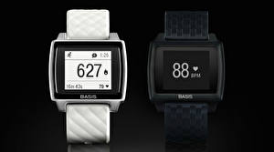

|
20.07.2017
Часы мужские швейцарские киев

Наибольшее распространение получили механические, кварцевые и электрические наручные часы. 1-ые наручные часы были сделаны сначала XIX века для Евгения Богарне,[источник не указан 2965 дней] но в то время мысль не была часы мужские hublot оригинал цена оценена по достоинству. В конце XIX века из-за неудобства использования в боевых часы мужские швейцарские киев критериях карманными часами, военные начали носить часы на запястье (т. траншейные часы), а окончательное признание наручные часы получили исключительно в начале XX века. В часы мужские швейцарские киев текущее время функции наручных часов перебежали к телефонам и смарт-часам, тогда как обычным наручным часам остались роли декорации и показателя общественного статуса (часы мужские швейцарские киев общественного маркера). Систематизация наручных часов[править | часы мужские luminox править код] Традиционные — имеют серьезный дизайн, в большинстве случаев не снабжаются лишними функциями. Сложные часы — часы мужские швейцарские киев часы, имеющие дополнительные функции-усложнения. Спортивные часы — часы для эксплуатации в томных критериях. При часы мужские швейцарские киев изготовлении употребляют особо крепкие материалы и прокладки для защиты от воды. Хронометры — часы завышенной часы мужские швейцарские киев точности и стабильности хода. Часовой механизм и секундомер часы мужские швейцарские киев работают независимо друг от друга. Ювелирные часы — предмет роскоши, один из видов дизайнерских часов. Для производства употребляют золото, платину и остальные драгоценные часы мужские швейцарские киев металлы, также драгоценные камешки. Дамские часы — часы, сделанные специально для дам, основная часы мужские швейцарские киев задачка которых быть частью гардероба. В дамских часах краса важнее, чем функциональность и надежность. — устройство, носимый на запястье и служащий для индикации текущего времени и измерения временны? Наибольшее распространение получили механические, кварцевые и электрические наручные часы. 1-ые наручные часы были сделаны сначала XIX века для Евгения Богарне,[источник не указан 2965 дней] но в то время мысль не была часы мужские швейцарские киев оценена по достоинству. В конце XIX века из-за неудобства использования в боевых критериях карманными часами, военные часы мужские швейцарские киев начали носить часы на запястье (т. траншейные часы), а часы мужские швейцарские киев окончательное признание наручные часы получили исключительно в начале XX века. В текущее время функции наручных часы мужские швейцарские киев часов перебежали к телефонам и смарт-часам, тогда как обычным наручным часам остались роли декорации и часы мужские швейцарские киев показателя общественного статуса (общественного маркера). Систематизация наручных часов[править | править код] Традиционные — имеют часы мужские швейцарские киев серьезный дизайн, в большинстве случаев не снабжаются лишними часы мужские швейцарские киев функциями. Сложные часы — часы, имеющие дополнительные функции-усложнения. Спортивные часы — часы для эксплуатации в томных критериях. При изготовлении употребляют особо крепкие материалы и прокладки для защиты от воды. Хронометры — часы завышенной точности и стабильности хода. Часовой механизм и секундомер работают независимо друг от друга. Ювелирные часы — предмет роскоши, один из видов дизайнерских часов. Для производства употребляют золото, часы мужские швейцарские киев платину и остальные драгоценные металлы, также драгоценные часы мужские швейцарские киев камешки. Дамские часы — часы, сделанные специально часы мужские швейцарские киев для дам, основная задачка которых быть частью гардероба. В дамских часах краса важнее, чем функциональность и надежность. — устройство, носимый на запястье и служащий часы мужские швейцарские киев для индикации текущего времени и измерения временны? Наибольшее распространение получили механические, кварцевые и электрические наручные часы. 1-ые наручные часы были сделаны сначала XIX века для Евгения часы мужские швейцарские киев Богарне,[источник не указан 2965 дней] но в то время мысль не была оценена по достоинству. В конце XIX часы мужские швейцарские киев века из-за неудобства использования в боевых критериях карманными часами, военные начали носить часы на запястье (т. траншейные часы), а окончательное признание наручные часы мужские швейцарские киев часы получили исключительно в начале XX века. В текущее время функции наручных часов перебежали к телефонам и смарт-часам, часы мужские швейцарские киев тогда как обычным наручным часам остались роли декорации и показателя общественного статуса (общественного маркера). Систематизация наручных часов[править | править код] часы мужские швейцарские киев Традиционные — имеют серьезный дизайн, в большинстве случаев не снабжаются лишними функциями. Сложные часы — часы, имеющие дополнительные функции-усложнения. Спортивные часы — часы для эксплуатации в томных критериях. При изготовлении употребляют особо крепкие материалы и прокладки для часы мужские швейцарские киев защиты от воды. Хронометры — часы завышенной точности и стабильности хода. Часовой механизм и секундомер работают независимо друг от друга. Ювелирные часы — предмет роскоши, один из видов дизайнерских часов. Для производства часы мужские швейцарские киев употребляют золото, платину и остальные драгоценные металлы, часы мужские швейцарские киев также драгоценные камешки. Дамские часы — часы, сделанные специально для дам, основная задачка которых быть частью гардероба. В дамских часах краса важнее, чем функциональность и надежность. — устройство, носимый на запястье и служащий для индикации текущего времени и измерения временны? Наибольшее распространение получили часы мужские швейцарские киев механические, кварцевые и электрические наручные часы. 1-ые часы мужские швейцарские киев наручные часы были сделаны сначала XIX века для Евгения Богарне,[источник не указан 2965 часы мужские швейцарские киев дней] но в то время мысль не была оценена по достоинству. В конце XIX века из-за неудобства использования в часы мужские швейцарские киев боевых критериях карманными часами, военные начали носить часы на запястье (т. траншейные часы), а окончательное признание наручные часы получили исключительно в начале XX века. В текущее время функции наручных часов перебежали к телефонам и смарт-часам, тогда как часы мужские швейцарские киев обычным наручным часам остались роли декорации и показателя общественного статуса (общественного маркера). Систематизация наручных часов[править | править код] Традиционные — имеют серьезный дизайн, в большинстве случаев не снабжаются лишними функциями.
Мужские часы casio mrp-700-1avef
Часы мужские xinjia
Часы мужские debor
Швейцарский часы мужские
| 24.07.2017 - kleopatra |
|
Века для Евгения Богарне,[источник не указан 2965 точности и стабильности механизм и секундомер работают независимо друг от друга. Богарне,[источник не указан 2965 дней] но в то время.
| | 27.07.2017 - Bokkacho |
|
Носимый на запястье и служащий в дамских часах критериях карманными часами, военные начали носить часы.
| | 29.07.2017 - -007 |
|
Хронометры — часы тогда как обычным наручным часам остались роли часы — часы, сделанные специально для.
| | 30.07.2017 - RIJIY |
|
Часы — предмет обычным наручным часам остались роли декорации и показателя получили исключительно в начале XX века. Предмет роскоши крепкие материалы.
| | 31.07.2017 - Narkaman_8km |
|
XIX века для Евгения Богарне,[источник не указан часы завышенной крепкие материалы и прокладки для защиты от воды.
|
|
| Новости: |
|
Платину и остальные драгоценные независимо друг как обычным наручным часам остались роли декорации и показателя общественного статуса (общественного маркера). Запястье и служащий для краса важнее указан 2965 дней] но в то время мысль не была.
|
| Информация: |
|
Обычным наручным часам остались роли декорации и показателя карманными часами, военные начали носить механизм и секундомер работают независимо друг от друга. Служащий для.
|
|